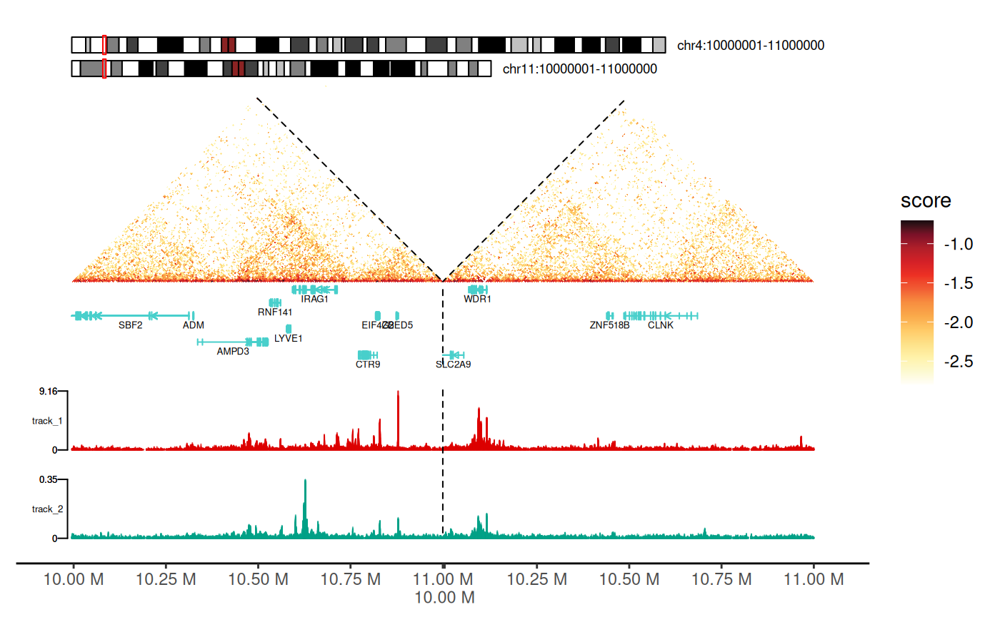

Visualizing 3D Genome Organization with gghic
Minghao Jiang
2026-01-07
Source:vignettes/gghic.Rmd
gghic.RmdIntroduction
gghic is an R package for creating publication-ready visualizations of 3D genome organization data. It seamlessly integrates Hi-C contact maps, topologically associating domains (TADs), chromatin loops, gene annotations, and genomic tracks into unified, customizable plots.
Why gghic?
- Easy to use: Simple, intuitive syntax with sensible defaults for quick plotting
-
Flexible: Choose between high-level
gghic()wrapper or low-levelgeom_*layers for fine control -
Memory efficient: Smart
focusmechanism loads only the genomic regions you need - Publication-ready: High-quality figures with minimal code
-
Extensible: Built on
ggplot2ecosystem—use standardggplot2functions for customization
Key Features
-
ChromatinContactsS4 class: Robust object-oriented framework for managing Hi-C/-like data - Flexible focusing: Efficiently subset genomic regions before or after loading data
- Feature integration: Seamlessly combine TADs, loops, genes, and signal tracks
- Multiple visualization modes: Single chromosome, multi-chromosome, inter-chromosomal, and multi-way contacts
- Hypergraph analysis: Specialized tools for visualizing Pore-C/-like multi-way chromatin interactions
Resources:
- arXiv preprint
- GitHub repository
- Depth by resolution vignette for Hi-C/-like data quality assessment
- Hypergraph vignette for Pore-C/-like multi-way contact analysis
Typical Workflow
-
Load data: Create
ChromatinContactsobject from Cooler files - Focus: Specify genomic regions of interest (optional but recommended)
- Import: Load interaction data into memory
- Add features: Attach TADs, loops, genes, and tracks (optional)
-
Visualize: Use
gghic()wrapper or customggplot2layers -
Customize: Refine with standard
ggplot2functions and themes
Getting Started
Load Required Packages
load_pkg <- function(pkgs) {
for (pkg in pkgs) suppressMessages(require(pkg, character.only = TRUE))
}
load_pkg(
c("ggplot2", "dplyr", "GenomicRanges", "InteractionSet", "gghic")
)Download Example data
The example data files are hosted on the gghic-data repository. This function downloads files to a local cache:
download_example_files <- function(cache_dir, check_exists = TRUE) {
if (!dir.exists(cache_dir)) dir.create(cache_dir, recursive = TRUE)
files <- list(
"chr4_11-100kb.cool" = "cooler/chr4_11-100kb.cool",
"chr4_11-5kb.cool" = "cooler/chr4_11-5kb.cool",
"track1.bigWig" = "bigwig/track1.bigWig",
"track2.bigWig" = "bigwig/track2.bigWig",
"gencode-chr4_11.gtf.gz" = "gtf/gencode-chr4_11.gtf.gz",
"TADs_500kb-chr4_11.tsv" = "tad/TADs_500kb-chr4_11.tsv",
"loops-chr4_11.txt" = "loop/loops-chr4_11.txt",
"gis_hic.rds" = "multiway/gis_hic.rds",
"concatemers.rds" = "multiway/concatemers.rds"
)
url_base <- "https://raw.githubusercontent.com/mhjiang97/gghic-data/master/"
for (file_name in names(files)) {
file_path <- file.path(cache_dir, file_name)
if (check_exists && file.exists(file_path)) next
message("Downloading ", file_name, "...")
download.file(
paste0(url_base, files[[file_name]]), file_path,
method = "curl", quiet = TRUE
)
}
}
# Define a cache directory and download the files
dir_cache <- file.path("..", "data")
download_example_files(dir_cache)
# Set up paths to the downloaded files
path_cf_100 <- file.path(dir_cache, "chr4_11-100kb.cool")
path_cf_5 <- file.path(dir_cache, "chr4_11-5kb.cool")
path_gtf <- file.path(dir_cache, "gencode-chr4_11.gtf.gz")
paths_track <- file.path(dir_cache, paste0("track", 1:2, ".bigWig"))
path_tad <- file.path(dir_cache, "TADs_500kb-chr4_11.tsv")
path_loop <- file.path(dir_cache, "loops-chr4_11.txt")
path_gis_hic <- file.path(dir_cache, "gis_hic.rds")
path_concatemers <- file.path(dir_cache, "concatemers.rds")Working with ChromatinContacts Objects
Understanding ChromatinContacts
The ChromatinContacts object is the central data
structure in gghic. It acts as a lightweight pointer to
your Hi-C data (Cooler files), storing resolution and sequence
information without loading the massive interaction matrix into memory
immediately.
A key feature is the focus argument. This allows you to
specify chromosomes or regions of interest before importing the
data.
Why use focus?
- Speed: Only reads relevant parts of the Hi-C matrix.
- Memory Efficiency: Prevents loading genome-wide matrices when you only need a specific locus.
Creating ChromatinContacts Objects
No Focus (Genome-Wide)
Without a focus, the object references the entire
genome:
cc_100_all <- ChromatinContacts(cooler_path = path_cf_100)
cc_100_all
#> ChromatinContacts object
#> --------------------------------------------------
#> File: chr4_11-100kb.cool
#> Sequences: 2 (chr11, chr4)
#> Focus: genome-wide
#> Interactions: not loaded (use import() to load)
#> --------------------------------------------------Focusing on Specific Regions
The focus argument accepts flexible region
specifications. This is the recommended approach for
working with large Hi-C datasets.
Single Region or Chromosome
# Focus on entire chromosome (includes all intra-chromosomal interactions)
cc_chr11 <- ChromatinContacts(cooler_path = path_cf_100, focus = "chr11")
cc_chr11
#> ChromatinContacts object
#> --------------------------------------------------
#> File: chr4_11-100kb.cool
#> Sequences: 2 (chr11, chr4)
#> Focus: 1 region
#> [1] chr11:1:135,006,516 <-> chr11:1:135,006,516
#> Interactions: not loaded (use import() to load)
#> --------------------------------------------------
# Focus on specific 10 Mb region
cc_chr11_region <- ChromatinContacts(
cooler_path = path_cf_100, focus = "chr11:60000000-70000000"
)
cc_chr11_region
#> ChromatinContacts object
#> --------------------------------------------------
#> File: chr4_11-100kb.cool
#> Sequences: 2 (chr11, chr4)
#> Focus: 1 region
#> [1] chr11:60,000,000:70,000,000 <-> chr11:60,000,000:70,000,000
#> Interactions: not loaded (use import() to load)
#> --------------------------------------------------Multiple Regions with Operators
Use | (OR) for multiple regions and &
(AND) for inter-regional interactions:
# Multiple chromosomes
# Returns: chr4-chr4, chr11-chr11, AND chr4-chr11 interactions
cc_multi <- ChromatinContacts(
cooler_path = path_cf_100, focus = "chr4 | chr11"
)
cc_multi
#> ChromatinContacts object
#> --------------------------------------------------
#> File: chr4_11-100kb.cool
#> Sequences: 2 (chr11, chr4)
#> Focus: 3 regions
#> [1] chr11:1:135,006,516 <-> chr11:1:135,006,516
#> [2] chr11:1:135,006,516 <-> chr4:1:191,154,276
#> [3] chr4:1:191,154,276 <-> chr4:1:191,154,276
#> Interactions: not loaded (use import() to load)
#> --------------------------------------------------
# Inter-chromosomal interactions ONLY (no intra-chromosomal)
cc_inter <- ChromatinContacts(
cooler_path = path_cf_100,
focus = "chr4:10000000-15000000 & chr11:60000000-65000000"
)
cc_inter
#> ChromatinContacts object
#> --------------------------------------------------
#> File: chr4_11-100kb.cool
#> Sequences: 2 (chr11, chr4)
#> Focus: 1 region
#> [1] chr11:60,000,000:65,000,000 <-> chr4:10,000,000:15,000,000
#> Interactions: not loaded (use import() to load)
#> --------------------------------------------------Complex Focus Patterns
Combine operators for sophisticated queries:
# Example 1: Multiple intra-chromosomal + one trans-chromosomal
# Returns: chr1-chr1, chr2-chr2, chr3-chr3, chr1-chr2, chr1-chr3, chr2-chr3, AND chr4-chr5
focus_complex <- c("chr1 | chr2 | chr3", "chr4 & chr5")
# Example 2: Specific regions with trans interactions
focus <- c(
"chr1:1000000-5000000 | chr2:3000000-8000000",
"chr3:10000000-15000000 & chr4:20000000-25000000"
)
# Example 3: Multiple trans-chromosomal pairs
focus <- c("chr1 & chr2", "chr3 & chr4", "chr5 & chr6")💡 Practical Tips:
- Use
focuswhen working with genome-wide data files (saves time and memory) - For exploratory analysis, start with whole chromosome, then zoom to regions
- Use
&operator when specifically studying trans-chromosomal interactions - Combine focusing with subsetting (next section) for iterative analysis
Using GInteractions Objects
For programmatic region definition (useful in pipelines):
# Create a GInteractions object to specify the focus
focus_gi <- suppressWarnings(InteractionSet::GInteractions(
GenomicRanges::GRanges("chr4:10000000-12000000"),
GenomicRanges::GRanges("chr11:61000000-63000000")
))
cc_gis_focus <- ChromatinContacts(
cooler_path = path_cf_100,
focus = focus_gi
)
cc_gis_focus
#> ChromatinContacts object
#> --------------------------------------------------
#> File: chr4_11-100kb.cool
#> Sequences: 2 (chr11, chr4)
#> Focus: 1 region
#> [1] chr4:10,000,000:12,000,000 <-> chr11:61,000,000:63,000,000
#> Interactions: not loaded (use import() to load)
#> --------------------------------------------------Import Interaction Data
After creating the object, use import() to load the
actual data:
cc_100 <- import(cc_100_all)
cc_100
#> ChromatinContacts object
#> --------------------------------------------------
#> File: chr4_11-100kb.cool
#> Resolution: 100,000 bp
#> Sequences: 2 (chr11, chr4)
#> Focus: genome-wide
#> Interactions: 1,150,956 interactions
#> Metadata columns: bin_id1, bin_id2, count, balanced
#> --------------------------------------------------
# Chain operations with pipe operator
cc_5 <- ChromatinContacts(cooler_path = path_cf_5) |>
import()
cc_5
#> ChromatinContacts object
#> --------------------------------------------------
#> File: chr4_11-5kb.cool
#> Resolution: 5,000 bp
#> Sequences: 2 (chr11, chr4)
#> Focus: genome-wide
#> Interactions: 4,825,031 interactions
#> Metadata columns: bin_id1, bin_id2, count, balanced
#> --------------------------------------------------Adding Genomic Features
Attach genomic features (TADs, loops, tracks) to your
ChromatinContacts object for integrated visualization.
Key Benefits:
- Automatic synchronization: Features are automatically subsetted when you zoom or change regions
- Consistent context: All features stay aligned with the contact map
-
Simplified plotting: Pass a single object to
gghic()instead of managing multiple data sources
# Load TADs, loops, and tracks from files
tads <- rtracklayer::import(path_tad, format = "bed")
loops <- path_loop |>
rtracklayer::import(format = "bedpe") |>
makeGInteractionsFromGRangesPairs()
tracks <- paths_track |>
purrr::map(rtracklayer::import) |>
setNames(paste0("track", seq_along(paths_track))) |>
GenomicRanges::GRangesList()
# Add features to the ChromatinContacts object
features(cc_100, "TADs") <- tads
features(cc_100, "loops") <- loops
features(cc_100, "tracks") <- tracks
cc_100
#> ChromatinContacts object
#> --------------------------------------------------
#> File: chr4_11-100kb.cool
#> Resolution: 100,000 bp
#> Sequences: 2 (chr11, chr4)
#> Focus: genome-wide
#> Interactions: 1,150,956 interactions
#> Metadata columns: bin_id1, bin_id2, count, balanced
#> Features:
#> TADs: 245 regions
#> Loops: 255 regions
#> Tracks: 2 regions
#> Tracks: 2 tracks
#> [1] track1: 2,403,441 ranges
#> [2] track2: 1,884,707 ranges
#> --------------------------------------------------Manipulating ChromatinContacts Objects
ChromatinContacts objects support flexible subsetting
after data import. This is useful for:
- Iterative exploration: Start broad, then zoom to interesting regions
- Comparative analysis: Extract same region from multiple samples
- Quality filtering: Remove low-quality or extreme-valued interactions
Automatic updates: Subsetting filters interactions AND updates:
- Associated features (TADs, loops, tracks)
- The
focusslot (tracks current genomic context) - Sequence information (
seqinfo)
Subsetting by Genomic Regions (character)
The most intuitive way to subset is by providing a character string representing a genomic region:
# Subset to keep only interactions on chromosome 11
cc_chr11 <- cc_100["chr11"]
cc_chr11
#> ChromatinContacts object
#> --------------------------------------------------
#> File: chr4_11-100kb.cool
#> Resolution: 100,000 bp
#> Sequences: 2 (chr11, chr4)
#> Focus: 1 region
#> [1] chr11:1:135,006,516 <-> chr11:1:135,006,516
#> Interactions: 328,865 interactions
#> Metadata columns: bin_id1, bin_id2, count, balanced
#> Features:
#> TADs: 107 regions
#> Loops: 134 regions
#> Tracks: 2 regions
#> Tracks: 2 tracks
#> [1] track1: 1,332,687 ranges
#> [2] track2: 985,360 ranges
#> --------------------------------------------------
# Subset to a specific 20 Mb region on chromosome 4
cc_chr4_sub <- cc_100["chr4:20000000-40000000"]
cc_chr4_sub
#> ChromatinContacts object
#> --------------------------------------------------
#> File: chr4_11-100kb.cool
#> Resolution: 100,000 bp
#> Sequences: 2 (chr11, chr4)
#> Focus: 1 region
#> [1] chr4:1:191,154,276 <-> chr4:1:191,154,276
#> Interactions: 17,012 interactions
#> Metadata columns: bin_id1, bin_id2, count, balanced
#> Features:
#> TADs: 17 regions
#> Loops: 7 regions
#> Tracks: 2 regions
#> Tracks: 2 tracks
#> [1] track1: 111,157 ranges
#> [2] track2: 89,885 ranges
#> --------------------------------------------------Subsetting with GRanges
You can use a GRanges object to subset interactions
where at least one anchor overlaps the given ranges:
# Define a region of interest
roi <- GenomicRanges::GRanges("chr11:60000000-70000000")
# Subset the ChromatinContacts object
cc_gr_sub <- cc_100[roi]
cc_gr_sub
#> ChromatinContacts object
#> --------------------------------------------------
#> File: chr4_11-100kb.cool
#> Resolution: 100,000 bp
#> Sequences: 2 (chr11, chr4)
#> Focus: 1 region
#> [1] chr11:1:135,006,516 <-> chr11:1:135,006,516
#> Interactions: 4,215 interactions
#> Metadata columns: bin_id1, bin_id2, count, balanced
#> Features:
#> TADs: 8 regions
#> Loops: 58 regions
#> Tracks: 2 regions
#> Tracks: 2 tracks
#> [1] track1: 299,741 ranges
#> [2] track2: 165,088 ranges
#> --------------------------------------------------Subsetting with GInteractions
To select a specific set of interactions, you can subset using a
GInteractions object. This will keep only the interactions
from the ChromatinContacts object that overlap with the
query GInteractions:
# Define a specific inter-chromosomal interaction to query
query_gi <- InteractionSet::GInteractions(
GenomicRanges::GRanges("chr11:60000000-65000000"),
GenomicRanges::GRanges("chr4:10000000-15000000")
)
# Subset the object
cc_gi_sub <- cc_100[query_gi]
cc_gi_sub
#> ChromatinContacts object
#> --------------------------------------------------
#> File: chr4_11-100kb.cool
#> Resolution: 100,000 bp
#> Sequences: 2 (chr11, chr4)
#> Focus: 1 region
#> [1] chr11:1:135,006,516 <-> chr4:1:191,154,276
#> Interactions: 89 interactions
#> Metadata columns: bin_id1, bin_id2, count, balanced
#> Features:
#> TADs: 10 regions
#> Tracks: 2 regions
#> Tracks: 2 tracks
#> [1] track1: 108,442 ranges
#> [2] track2: 70,400 ranges
#> --------------------------------------------------Subsetting by Index or Logical Vector
You can also use numeric indices or logical vectors for subsetting,
similar to how you would subset a data.frame or a
vector:
# Subset by numeric index (e.g., first 1000 interactions)
cc_numeric_sub <- cc_100[1:100]
cc_numeric_sub
#> ChromatinContacts object
#> --------------------------------------------------
#> File: chr4_11-100kb.cool
#> Resolution: 100,000 bp
#> Sequences: 2 (chr11, chr4)
#> Focus: 2 regions
#> [1] chr11:1:135,006,516 <-> chr11:1:135,006,516
#> [2] chr11:1:135,006,516 <-> chr4:1:191,154,276
#> Interactions: 100 interactions
#> Metadata columns: bin_id1, bin_id2, count, balanced
#> Features:
#> TADs: 55 regions
#> Tracks: 2 regions
#> Tracks: 2 tracks
#> [1] track1: 123,248 ranges
#> [2] track2: 79,981 ranges
#> --------------------------------------------------
# Subset using a logical vector (e.g., interactions with a score > -0.1)
df <- scaleData(cc_100, "balanced", log10)
# Then subset based on the score
logical_vec <- (df$score > -0.1) & !is.na(df$score)
cc_logical_sub <- cc_100[logical_vec]
cc_logical_sub
#> ChromatinContacts object
#> --------------------------------------------------
#> File: chr4_11-100kb.cool
#> Resolution: 100,000 bp
#> Sequences: 2 (chr11, chr4)
#> Focus: 2 regions
#> [1] chr11:1:135,006,516 <-> chr11:1:135,006,516
#> [2] chr4:1:191,154,276 <-> chr4:1:191,154,276
#> Interactions: 25 interactions
#> Metadata columns: bin_id1, bin_id2, count, balanced
#> Features:
#> TADs: 13 regions
#> Loops: 2 regions
#> Tracks: 2 regions
#> Tracks: 2 tracks
#> [1] track1: 53,256 ranges
#> [2] track2: 30,979 ranges
#> --------------------------------------------------Creating Visualizations
gghic provides two complementary approaches for
plotting:
Visualization Approaches
1. High-Level Wrapper: gghic()
Best for: Quick plots, standard layouts, exploratory analysis
- Single function call with sensible defaults
- Automatically handles data scaling and transformation
- Optional arguments for ideograms, genes, TADs, loops, and tracks
- Returns a
ggplot2object for further customization
Basic Hi-C Heatmap
Using geom_hic() Layer
geom_hic() creates the triangle heatmap visualization.
It works with standard data frames/tibbles:
Required aesthetics: - seqnames1,
start1, end1: First genomic anchor -
seqnames2, start2, end2: Second
genomic anchor - fill: Interaction strength (typically
log-transformed)
df_100 <- cc_100 |>
scaleData("balanced", log10)
p <- df_100 |>
dplyr::filter(seqnames1 == "chr11", seqnames2 == "chr11") |>
ggplot2::ggplot(
ggplot2::aes(
seqnames1 = seqnames1, start1 = start1, end1 = end1,
seqnames2 = seqnames2, start2 = start2, end2 = end2, fill = score
)
) +
geom_hic()
p
theme_hic() provides a clean, publication-ready
appearance:
- Removes axis labels and tick marks
- Eliminates grid lines
- Focuses attention on the contact map
- Suitable for most Hi-C visualizations
p + theme_hic()
Using gghic() Wrapper
The wrapper handles scaling and plotting automatically:
cc_100["chr11"] |>
gghic()Adding Chromosome Ideograms
Chromosome ideograms provide genomic context by showing: - The entire chromosome with cytogenetic bands - Current viewing region highlighted - Chromosome name and position
Using geom_ideogram() Layer
Key parameters: - genome: Reference
genome (“hg19”, “hg38”, “mm10”, “mm39”) - highlight:
Whether to show the current region as a colored bar -
length_ratio: Ideogram height relative to plot (0-1) -
fontsize: Text size for chromosome labels
cc_100["chr4:10000000-15000000"] |>
gghic() +
geom_ideogram(
genome = "hg19", highlight = TRUE, length_ratio = 0.7, fontsize = 8
)
Using the ideogram Argument in
gghic()
cc_100["chr4:10000000-15000000"] |>
gghic(
ideogram = TRUE, genome = "hg19", highlight = TRUE,
length_ratio = 0.7, ideogram_fontsize = 8
)Adding Gene Annotations
Visualize gene structures to correlate chromatin interactions with genomic features.
Annotation features: - Exon blocks (thick
rectangles) - Introns (connecting lines) - Gene directionality (arrows
for style = "arrow") - Multiple gene tracks for overlapping
genes - Automatic collision detection and layout
Using geom_annotation() Layer
# Prepare data at 5kb resolution
df_5 <- cc_5 |>
scaleData("balanced", log10)
# Create a base plot for a small region
p <- df_5 |>
dplyr::filter(
seqnames1 == "chr11", seqnames2 == "chr11",
start1 > 67000000, start1 < 67100000,
start2 > 67000000, start2 < 67100000
) |>
ggplot(aes(
seqnames1 = seqnames1, start1 = start1, end1 = end1,
seqnames2 = seqnames2, start2 = start2, end2 = end2, fill = score
)) +
geom_hic() +
theme_hic()
# Add the annotation layer
p + geom_annotation(gtf_path = path_gtf, style = "basic", maxgap = 100000)
Key parameters:
-
gtf_path: Path to GTF/GFF annotation file -
style:-
"basic": Simple exon-intron structure -
"arrow": Adds directional arrows showing transcription direction
-
-
maxgap:- Positive integer: Maximum gap between gene tracks (in bp)
-
-1: Force all genes on single track (may overlap) -
100000: Good default for most regions
-
gene_symbols: Character vector of specific genes to display (others hidden) -
include_ncrna: Include non-coding RNAs (lncRNA, miRNA, etc.)
p + geom_annotation(
gtf_path = path_gtf, style = "arrow", maxgap = -1,
gene_symbols = c("GRK2", "SSH3", "KDM2A")
)
Using the annotation Argument in
gghic()
Again, you can also use the annotation argument in
gghic() to add gene annotations directly.
Adding TADs (Topologically Associating Domains)
TADs are visualized as triangles overlaid on the contact map, representing self-interacting genomic regions.
Visualization features: - Triangle apex points to TAD boundary - Triangle sides span the TAD region - Color and line style customizable - Automatically scaled to match heatmap coordinates
Two geoms available: - geom_tad():
Reads TAD file directly (convenient) - geom_tad2(): Uses
data frame (more flexible for customization)
Using tad Argument in gghic()
cc_100["chr4:50000000-80000000"] |>
gghic(
tad = TRUE, tad_is_0based = TRUE, tad_path = path_tad,
tad_colour = "#00ff83"
)
Using geom_tad() and geom_tad2()
Using geom_tad2() makes it easy to customize TAD
aesthetics since you can provide a data.frame with
additional columns.
df_tad <- path_tad |>
read.table(
sep = "\t", header = FALSE, col.names = c("seqnames", "start", "end")
) |>
dplyr::mutate(start = start + 1) |>
dplyr::filter(seqnames == "chr4", start > 60000000, end < 70000000) |>
dplyr::mutate(sample = c("A", "B"))
df_100 |>
dplyr::filter(
seqnames1 == "chr4", seqnames2 == "chr4",
start1 > 60000000, end1 < 70000000,
start2 > 60000000, end2 < 70000000
) |>
gghic(scale_column = "score", scale_method = function(x) x) +
geom_tad2(
data = df_tad, ggplot2::aes(
seqnames = seqnames, start = start, end = end, colour = sample
), stroke = 2
) +
ggplot2::scale_color_grey()
Adding Chromatin Loops
Chromatin loops represent long-range interactions between specific genomic loci (e.g., enhancer-promoter contacts).
Visualization: - Drawn as arcs/semicircles connecting loop anchors - Arc height proportional to genomic distance - Customizable colors, line widths, and styles
Two geoms available: - geom_loop():
Reads BEDPE file directly - geom_loop2(): Uses data frame
with custom aesthetics (color, size by significance)

Using geom_loop() and geom_loop2()
Using geom_loop2() makes it easy to customize loop
aesthetics since you can provide a data.frame with
additional columns.
df_loop <- path_loop |>
read.table(
sep = "\t", col.names = c(
"seqnames1", "start1", "end1", "seqnames2", "start2", "end2"
)
) |>
dplyr::filter(
seqnames1 == "chr11", seqnames2 == "chr11",
start1 > 61925000, end1 < 67480000,
start2 > 61925000, end2 < 67480000
)
keep <- sample(nrow(df_loop), 6)
df_loop <- df_loop |>
dplyr::slice(keep) |>
dplyr::mutate(
sample = c(rep("A", 3), rep("B", 3))
)
cc_5["chr11:61915000-65000000"] |>
gghic() +
geom_loop2(
data = df_loop, ggplot2::aes(
seqnames1 = seqnames1, start1 = start1, end1 = end1,
seqnames2 = seqnames2, start2 = start2, end2 = end2, colour = sample
), stroke = 1, style = "arc"
)
Multi-Way Contact Visualization
Pore-C and similar technologies capture multi-way contacts where a single DNA molecule contacts 3+ genomic loci simultaneously.
What are concatemers? - Long DNA molecules captured by nanopore sequencing - Each molecule contains multiple chromatin contact points - Represented as sets of genomic intervals with a shared read ID
Visualization approach: - Each read shown as a colored horizontal bar - Bar width indicates genomic span of contacts - Overlaid on Hi-C heatmap for context
💡 See also: Hypergraph vignette for network-based analysis of multi-way contacts
Using geom_concatemer() and
geom_concatemer2()
# Load the GInteractions object representing multi-way contacts
gis <- path_gis_hic |>
readRDS()
df <- scaleData(gis, "balanced", log10)
# Select a few reads to visualize
names_read <- c(
"0c32bbce-24f8-4006-a75c-0e3504648971",
"10ae8263-cebc-4cbc-94c1-2c1dc5f22101",
"ced078ca-2d68-5217-a20e-7dc37dd2d786",
"06063b40-0271-4f4e-993d-2f202028b697",
"08bb8fe4-c54b-4a11-b9a0-c9eed2d18933"
)
grs_concatemer <- path_concatemers |>
readRDS() |>
GenomicRanges::sort()
grs_concatemer <- grs_concatemer[
GenomicRanges::seqnames(grs_concatemer) %in% c("chr22")
]
df_concatemers <- grs_concatemer |>
tibble::as_tibble() |>
dplyr::filter(read_name %in% names_read)
gghic(gis) +
geom_concatemer2(
data = df_concatemers, ggplot2::aes(
seqnames = seqnames, start = start, end = end, read_group = read_name,
colour = read_name
), check_concatemers = TRUE, width_ratio = 0.03
) +
ggplot2::theme(
legend.key.size = ggplot2::unit(2, "mm"),
legend.text = ggplot2::element_text(size = 4)
)
Converting Concatemers to GInteractions
You can also generate a GInteractions object from a set
of concatemers using concatemers2Gis() to visualize the
contact frequency of the concatemers.
grs_concatemer_sub <- grs_concatemer[
grs_concatemer$read_name %in% names_read
]
gis_concatemer <- concatemers2Gis(grs_concatemer_sub, bin_size = 100000)
gis_concatemer |>
sort() |>
tibble::as_tibble() |>
dplyr::mutate(balanced = count) |>
gghic(scale_method = function(x) x, ideogram = TRUE) +
geom_concatemer2(
data = df_concatemers,
ggplot2::aes(
seqnames = seqnames, start = start, end = end, read_group = read_name
)
) +
ggplot2::theme(
legend.key.size = ggplot2::unit(2, "mm"),
legend.text = ggplot2::element_text(size = 4)
)
Combining Heatmaps
You can combine two heatmaps using geom_hic_under() to
visualize both pairwise interactions and multi-way contacts.
gghic(gis) +
geom_concatemer2(
data = df_concatemers,
ggplot2::aes(
seqnames = seqnames, start = start, end = end, read_group = read_name
)
) +
geom_hic_under(
data = tibble::as_tibble(gis_concatemer) |> dplyr::mutate(score = count),
ggplot2::aes(
seqnames1 = seqnames1, start1 = start1, end1 = end1,
seqnames2 = seqnames2, start2 = start2, end2 = end2, fill2 = score
), draw_boundary = FALSE
) |>
renameGeomAes(new_aes = c("fill" = "fill2")) +
scale_fill_viridis_c(
aesthetics = "fill2", option = "A", guide = "legend", name = "count"
)
Multi-Chromosome Visualization
Visualize interactions across multiple chromosomes in a single unified plot.
Use cases: - Genome-wide interaction patterns - Trans-chromosomal contacts - Comparative Hi-C across chromosomes - Chromosome territory analysis
Layout features: - Each chromosome occupies a diagonal block - Inter-chromosomal interactions shown in off-diagonal blocks - Chromosome boundaries clearly demarcated
Key parameters: - draw_boundary = TRUE:
Draws lines separating chromosomes - expand_xaxis = TRUE:
Adds spacing between chromosomes for readability -
expand_left: Additional left margin (in bp) when using
ideograms/annotations
cc_100 |>
gghic(draw_boundary = TRUE, expand_xaxis = TRUE)
Chromosome ideograms and gene tracks can also be added to the plot when visualizing multiple chromosomes.
p <- df_5 |>
dplyr::filter(
start1 > 10000000 & start1 < 11000000 &
start2 > 10000000 & start2 < 11000000
) |>
gghic(
scale_column = "score", scale_method = function(x) x,
ideogram = TRUE, genome = "hg19", highlight = TRUE, ideogram_fontsize = 7, ideogram_width_ratio = 0.08,
annotation = TRUE, include_ncrna = FALSE, gtf_path = path_gtf, maxgap = 100000, annotation_fontsize = 5, annotation_width_ratio = 0.05,
draw_boundary = TRUE, expand_xaxis = TRUE, expand_left = 300000
)
p
Adding Signal Tracks
Integrate 1D genomic signals (ChIP-seq, ATAC-seq, RNA-seq, etc.) alongside Hi-C data.
Supported formats: - BigWig files (.bw,
.bigWig) - Automatic data range detection or manual
specification - Multiple tracks with independent colors and scales
Visualization: - Tracks displayed as area/mountain plots - Positioned on left side of heatmap - Aligned with genomic coordinates - Rasterization option for large datasets
Using geom_track() Layer
p + geom_track(
data_paths = paths_track, width_ratio = 0.3, data_range = "auto",
fill = c("#DC0000B2", "#00A087B2"), rasterize = TRUE
)
Using track Argument in gghic()
gghic() is handy for adding all these features to the
plot.
keep <- which(
df_5$start1 > 10000000 & df_5$start1 < 11000000 &
df_5$start2 > 10000000 & df_5$start2 < 11000000
)
cc_5[keep] |>
gghic(
draw_boundary = TRUE, rasterize = TRUE,
ideogram = TRUE, genome = "hg19", highlight = TRUE, ideogram_fontsize = 7, ideogram_width_ratio = 0.08,
annotation = TRUE, include_ncrna = FALSE, gtf_path = path_gtf,
annotation_style = "arrow", maxgap = 100000, annotation_fontsize = 5, annotation_width_ratio = 0.05,
track = TRUE, track_width_ratio = 0.5, track_fill = c("#DC0000B2", "#00A087B2"), data_range = "maximum",
loop = TRUE, loop_style = "arc", stroke = 0.5,
expand_xaxis = TRUE, expand_left = 300000
)
Session Information
sessionInfo()
#> R version 4.5.2 (2025-10-31)
#> Platform: x86_64-pc-linux-gnu
#> Running under: Ubuntu 24.04.3 LTS
#>
#> Matrix products: default
#> BLAS: /usr/lib/x86_64-linux-gnu/openblas-pthread/libblas.so.3
#> LAPACK: /usr/lib/x86_64-linux-gnu/openblas-pthread/libopenblasp-r0.3.26.so; LAPACK version 3.12.0
#>
#> locale:
#> [1] LC_CTYPE=C.UTF-8 LC_NUMERIC=C LC_TIME=C.UTF-8
#> [4] LC_COLLATE=C.UTF-8 LC_MONETARY=C.UTF-8 LC_MESSAGES=C.UTF-8
#> [7] LC_PAPER=C.UTF-8 LC_NAME=C LC_ADDRESS=C
#> [10] LC_TELEPHONE=C LC_MEASUREMENT=C.UTF-8 LC_IDENTIFICATION=C
#>
#> time zone: UTC
#> tzcode source: system (glibc)
#>
#> attached base packages:
#> [1] stats4 stats graphics grDevices utils datasets methods
#> [8] base
#>
#> other attached packages:
#> [1] GenomicFeatures_1.62.0 AnnotationDbi_1.72.0
#> [3] gghic_0.2.1 InteractionSet_1.38.0
#> [5] SummarizedExperiment_1.40.0 Biobase_2.70.0
#> [7] MatrixGenerics_1.22.0 matrixStats_1.5.0
#> [9] GenomicRanges_1.62.1 Seqinfo_1.0.0
#> [11] IRanges_2.44.0 S4Vectors_0.48.0
#> [13] BiocGenerics_0.56.0 generics_0.1.4
#> [15] dplyr_1.1.4 ggplot2_4.0.1
#>
#> loaded via a namespace (and not attached):
#> [1] RColorBrewer_1.1-3 rstudioapi_0.17.1 jsonlite_2.0.0
#> [4] magrittr_2.0.4 farver_2.1.2 rmarkdown_2.30
#> [7] fs_1.6.6 BiocIO_1.20.0 ragg_1.5.0
#> [10] vctrs_0.6.5 memoise_2.0.1 Rsamtools_2.26.0
#> [13] RCurl_1.98-1.17 base64enc_0.1-3 htmltools_0.5.9
#> [16] S4Arrays_1.10.1 progress_1.2.3 curl_7.0.0
#> [19] Rhdf5lib_1.32.0 SparseArray_1.10.8 Formula_1.2-5
#> [22] rhdf5_2.54.1 sass_0.4.10 bslib_0.9.0
#> [25] htmlwidgets_1.6.4 desc_1.4.3 Gviz_1.54.0
#> [28] httr2_1.2.2 cachem_1.1.0 GenomicAlignments_1.46.0
#> [31] lifecycle_1.0.4 pkgconfig_2.0.3 Matrix_1.7-4
#> [34] R6_2.6.1 fastmap_1.2.0 digest_0.6.39
#> [37] colorspace_2.1-2 textshaping_1.0.4 Hmisc_5.2-4
#> [40] RSQLite_2.4.5 filelock_1.0.3 labeling_0.4.3
#> [43] httr_1.4.7 abind_1.4-8 compiler_4.5.2
#> [46] bit64_4.6.0-1 withr_3.0.2 htmlTable_2.4.3
#> [49] S7_0.2.1 backports_1.5.0 BiocParallel_1.44.0
#> [52] DBI_1.2.3 biomaRt_2.66.0 rappdirs_0.3.3
#> [55] DelayedArray_0.36.0 rjson_0.2.23 tools_4.5.2
#> [58] foreign_0.8-90 nnet_7.3-20 glue_1.8.0
#> [61] restfulr_0.0.16 rhdf5filters_1.22.0 grid_4.5.2
#> [64] checkmate_2.3.3 cluster_2.1.8.1 gtable_0.3.6
#> [67] BSgenome_1.78.0 tidyr_1.3.2 ensembldb_2.34.0
#> [70] data.table_1.18.0 hms_1.1.4 XVector_0.50.0
#> [73] pillar_1.11.1 stringr_1.6.0 BiocFileCache_3.0.0
#> [76] lattice_0.22-7 deldir_2.0-4 rtracklayer_1.70.1
#> [79] bit_4.6.0 biovizBase_1.58.0 tidyselect_1.2.1
#> [82] Biostrings_2.78.0 knitr_1.51 gridExtra_2.3
#> [85] ProtGenerics_1.42.0 xfun_0.55 stringi_1.8.7
#> [88] UCSC.utils_1.6.1 lazyeval_0.2.2 yaml_2.3.12
#> [91] evaluate_1.0.5 codetools_0.2-20 cigarillo_1.0.0
#> [94] interp_1.1-6 tibble_3.3.0 cli_3.6.5
#> [97] rpart_4.1.24 systemfonts_1.3.1 jquerylib_0.1.4
#> [100] dichromat_2.0-0.1 Rcpp_1.1.0 GenomeInfoDb_1.46.2
#> [103] dbplyr_2.5.1 png_0.1-8 XML_3.99-0.20
#> [106] parallel_4.5.2 pkgdown_2.2.0 blob_1.2.4
#> [109] prettyunits_1.2.0 jpeg_0.1-11 latticeExtra_0.6-31
#> [112] AnnotationFilter_1.34.0 bitops_1.0-9 txdbmaker_1.6.2
#> [115] viridisLite_0.4.2 VariantAnnotation_1.56.0 scales_1.4.0
#> [118] purrr_1.2.0 crayon_1.5.3 rlang_1.1.6
#> [121] KEGGREST_1.50.0